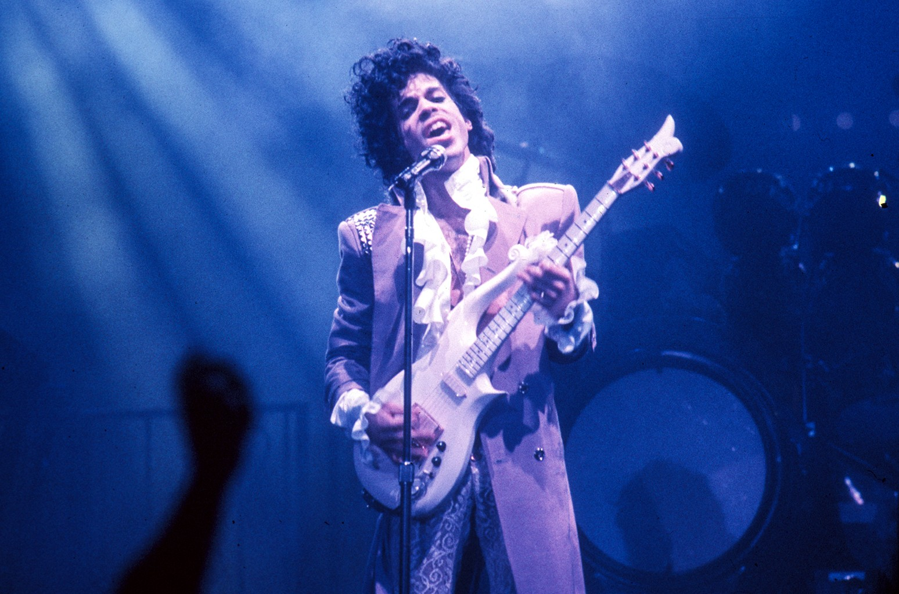
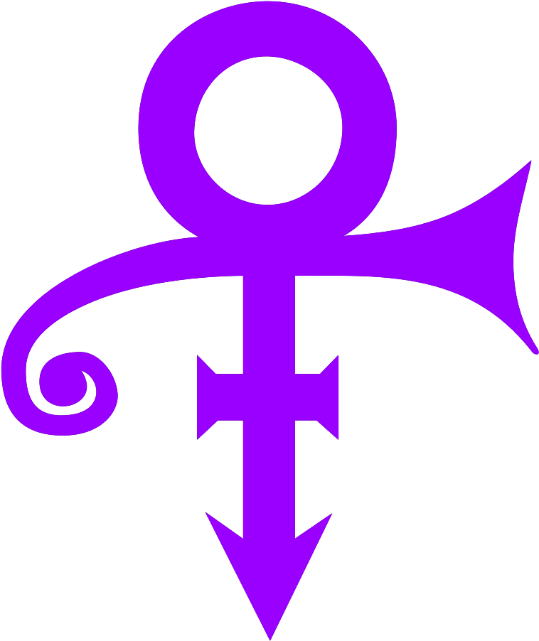

Prince
The Purple One

Prince perfoming Purple Rain to a sold out venue
A time line of Prince's life:
- June 7, 1958: Prince Rogers Nelson born in Minneapolis, MN.
- 1979: Hastily writes and records the single, “I Wanna Be Your Lover,” as a followup to “For You.” It becomes his first Top 40 hit, spending two weeks at number one on the R&B singles chart and hitting No. 11 on the Billboard Hot 100.
- 1982: Releases the album, “1999,” which sells some three million copies and brings him worldwide fame. Features the hit singles “1999” and “Little Red Corvette.”
- 1984: Releases the album “Purple Rain” and stars in the movie of the same name. The album sells an incredible 13 million copies just in the U.S. and produces two No. 1 singles, Let’s Go Crazy” and “When Doves Cry,” which won a Grammy and an Academy Award. The movie and the album both hit No. 1 the same week.
- 1986: Begins construction of Paisley Park, the 55,000 square foot complex on the outskirts of Minneapolis where he lived and worked.
- 1989: Writes the soundtrack for the movie “Batman;” it quickly sells two million copies in the U.S.
- 1993: Begins a very public feud with Warner Bros., which wants him to release fewer albums and won’t let him out of his contract. Prince changes his name to an unpronounceable symbol and appears with the word “SLAVE” written on his face. People begin referring to him as “The artist formerly known as Prince.”
- 1995: Is finally released from his Warner Bros. contract and releases 10 albums worth of material.
- 1996: Marries Mayte Garcia. That same year, their seven-day-old son, Gregory, dies from a genetic skull condition.
- 2000: Divorce from Mayte is formalized. Changes his name back to Prince.
- 2001: Raised a Seventh Day Adventist and later a Baptist, Prince formally becomes a Jehovah’s Witness. That same year, he marries Manuela Testolini, whom he met while she was working for his charitable foundation. The couple would divorce in 2006.
- 2004: Provides a stunning opening to the Grammy Awards, performing “Purple Rain” along with Beyonce. That same year, his first time eligible, he is inducted into the Rock and Roll Hall of Fame.
- 2006: Releases the album “3121,” which hits No. 1 and spurs innumerable theories about the significance of the number. That same year, he temporarily renames a Las Vegas club “3121” and performs there twice a week for fans paying $125 apiece … Wins a Golden Globe for the “Song of the Heart,” which he wrote and performed for the animated film, “Happy Feet.”
- 2007: Beginning with a whispered, “Dearly beloved,” from “Let’s Go Crazy,” he unleashes what is widely acknowledged as the most exciting Super Bowl halftime show ever.
- 2010: Performs a recordbreaking run of 21 concerts in London.
- 2015: An innovator to the end, he releases what will be his final album, HITnRUN Phase One, exclusively on the Tidal streaming service. Eight days later, on Sept. 15, it finally comes out on traditional CD.
- April 7, 2016: Just hours before he’s scheduled to go onstage, postpones two shows scheduled for that night at Atlanta’s Fox Theatre reportedly due to the flu. Reschedules them for the following week.
- April 14, 2016: Performs the two makeup shows to delirious, sold-out crowds at the Fox. Hours later, the plane carrying him from Atlanta makes an unscheduled landing in Moline, Illinois, around 1 a.m. so the music superstar can be taken to a nearby hospital. Back at home later on April 15th, he appears to tweak the reaction to his emergecy landing with a Tweet that reads, “#NowPlaying “Controversy (Single Version)” by @Prince.”
- April 21, 2016: Sheriff’s deputies and medical personnel in Carver County, Minnesota respond to an emergency call at Prince’s Paisley Park residence at 9:43 a.m. At 10:07 a.m., Prince Roges Nelson is pronounced dead.

"Few artists have influenced the sound and trajectory of popular music more distinctly, or touched quite so many people with their talent. As one of the most gifted and prolific musicians of our time, Prince did it all. Funk. R&B. Rock and roll. He was a virtuoso instrumentalist, a brilliant bandleader, and an electrifying performer. 'A strong spirit transcends rules,' Prince once said and nobody's spirit was stronger, bolder, or more creative."
--Questlove